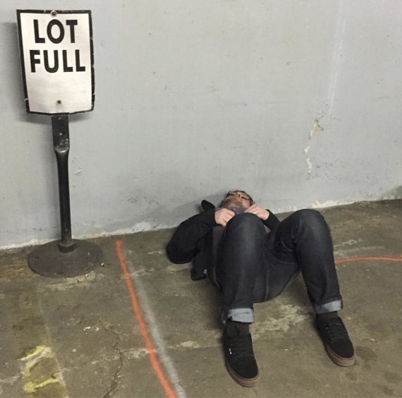

    <div class="container-fluid photos">
      <div class="row justify-content-center">
        
        <div class="col-md-6 pt-4">
          <figure class="mb-5" data-aos="fade-up">
            
          </figure>

          <h2 class="text-white mb-4" data-aos="fade-up">bio</h2>

          <div class="row" data-aos="fade-up">
            <div class="col-md-12">
              <p>Corey Oglesby is a poet and artist originally from the Washington, DC, area, and he is also me. My poems and poem-comics have appeared recently or are forthcoming in Beloit Poetry Journal, Barrow Street, Diagram, Hobart, Puerto del Sol, jubilat, and elsewhere. Formerly the Editor-in-Chief of Fugue, I currently live and make things in Moscow, Idaho.</p>
            </div>
          </div>
        </div>

      </div>
</div>
